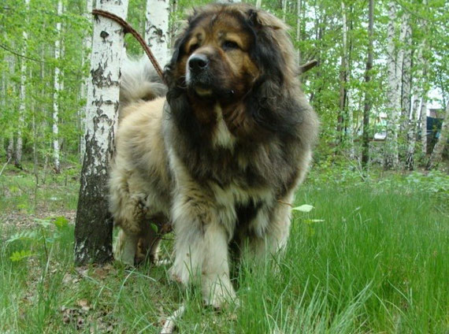

Кавказская овчарка – самый крупный представитель семейства пастушьих собак. Порода насчитывает более чем двухтысячелетнюю историю. Суровый горный климат Кавказа наложил свой отпечаток: большие размеры, буйно растущая длинная густая шерсть с густым подшерстком, необыкновенная выносливость и сила, преданность одному хозяину, злобность и недоверчивость, порой даже свирепость – вот отличительные качества.
Кавказская овчарка заслуженно считается лучшей сторожевой собакой и мало пригодна к содержанию в городской квартире. «Кавказцы» в любой момент готовы встать на защиту своих домочадцев, а с детьми – не прочь поиграть. Это достаточно дружелюбный пес за пределами своей территории. Свой же участок он будет стеречь с особым рвением.